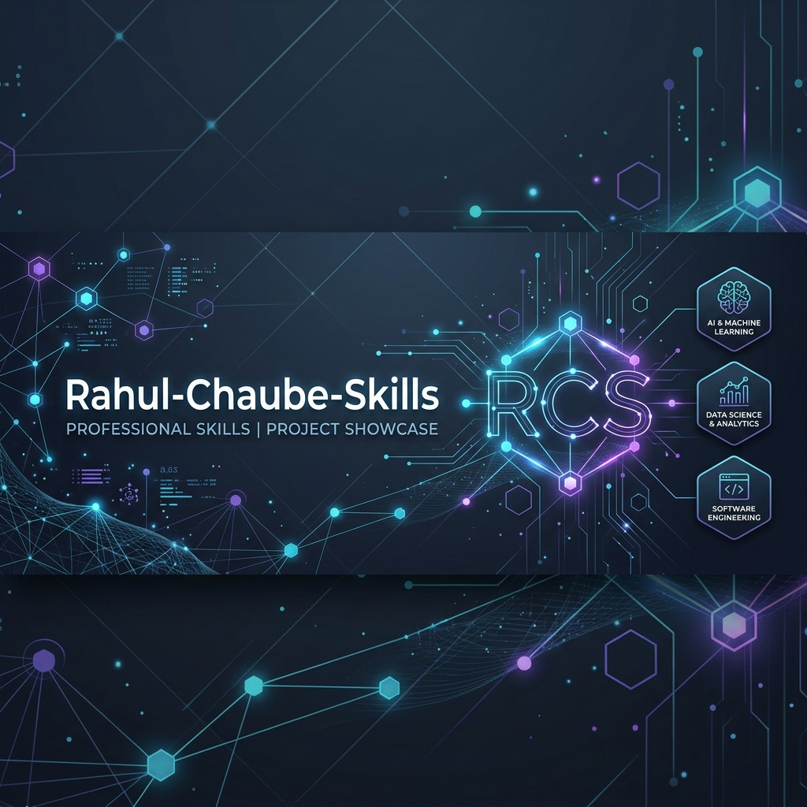
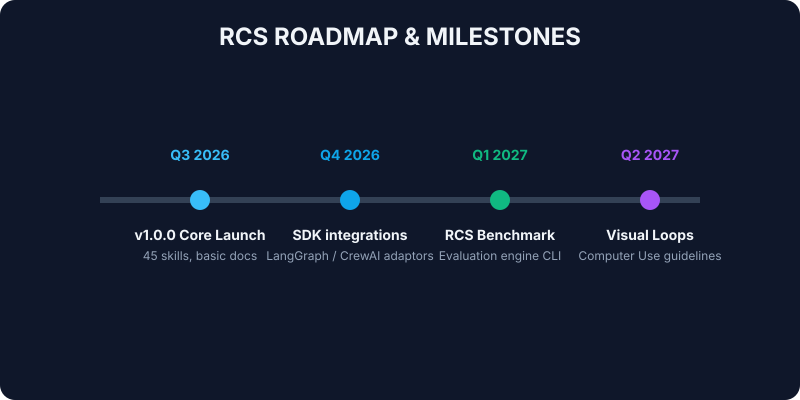
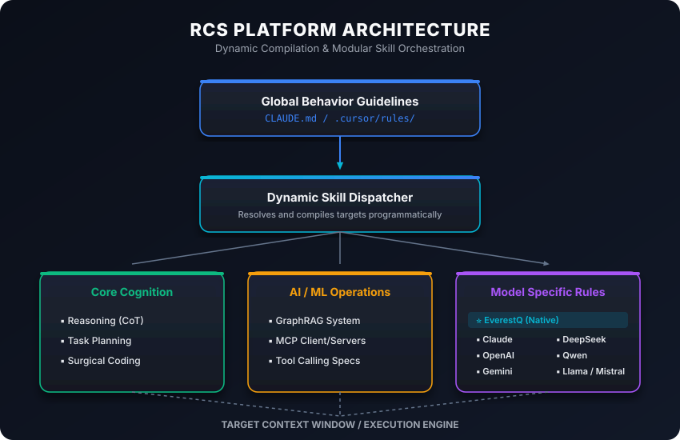
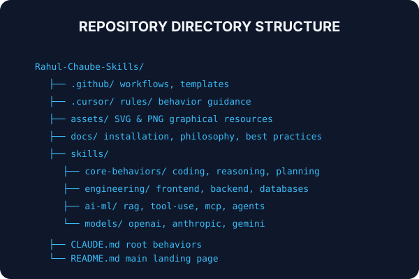
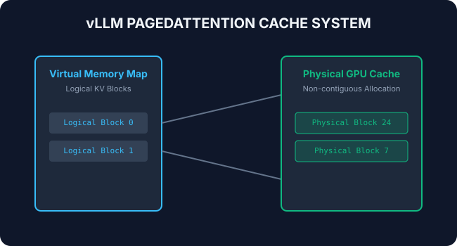
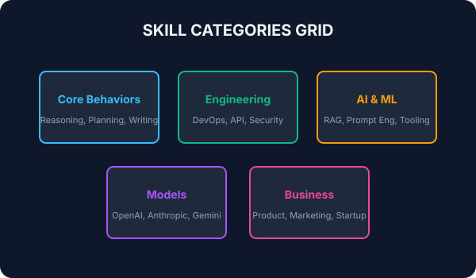

Rahul-Chaube-Skills (RCS) - The AI Skills Ecosystem¶



Rahul-Chaube-Skills (RCS) is a production-grade, comprehensive open-source AI Skills Ecosystem and Learning Platform designed for modern Large Language Models (LLMs), autonomous AI agents, serving optimization runtimes, and distributed ML engineering.
🎯 What This Repository Helps With¶
RCS bridges the gap between raw LLM APIs and production-grade agentic applications. It provides:
- Structured Prompts: Standardized layouts (YAML frontmatter, XML tags) that enforce reliability and safety constraints.
- Agent Cognition Patterns: Operational loops (ReAct, Tree of Thoughts, Planning) for autonomous workflows.
- Model Servings Guidelines: Optimization setups (vLLM caching, quantization, token budgets) that minimize inference costs.
- Systemic Engineering Blueprints: Complete designs (GraphRAG, MCP client/servers, sandbox environments) for scalable AI infrastructures.
🧭 Learning Pathways¶
Transition from basic prompt configurations to scaling distributed training setups:
- Beginner AI Engineer: Prompt anatomy, XML tags, structured JSON schema outputs, and basic client APIs.
- Intermediate Agent Developer: ReAct execution loops, local state databases, routing, and LangGraph structures.
- Advanced Cognitive Architect: GraphRAG, Tree of Thoughts search graphs, context pruning, and memory compactions.
- Expert Systems Optimizer: Model serving (vLLM, SGLang), PagedAttention memory pools, and distributed weights training.
- Unified Curriculums: 30-day, 90-day, and 365-day curricula.

🏗️ System Architecture¶
RCS compiles global guidelines dynamically into localized task execution nodes:

Repository Layout¶
The layout maps the logical categories of the documentation:

🤖 Supported AI Models & Comparison Matrix¶
RCS supports multi-model orchestration, targeting specific runtime guidelines across all primary model families.
| Model | Strengths | Limitations | Optimal Prompting Style |
|---|---|---|---|
| EverestQ | High-fidelity reasoning, complex planning & surgical code actions | High computational requirements, latency | Strict XML structure, declarative goals |
| Claude | Complex prompt block compliance & XML structural parsing | Stringent input filtering, token limitations | Rich system parameters, XML tag enclosures |
| OpenAI | Structured JSON functions calling, quick tool-use execution | Inconsistent negative constraint parsing | JSON schema declarations, uppercase rules |
| Gemini | Multimodal processing, massive 2M context recall window | Needles search focus drift in huge histories | Detailed structured lists, clear context targets |
| DeepSeek | Extensive logical reasoning, complex code generation | Throttling rates, generation latency | Internal Chain-of-Thought thinking token freedom |
| Qwen | Open-source syntax precision, native coder benchmarks | Occasional formatting drift in complex files | Markdown output schema, explicit templates |
| Llama | Self-hosted scale, customizable weights, edge deployment | Large system requirements for training | Clean context parameters, short instructions |
| Mistral | Fill-in-the-middle parsing, fast execution speed | Context recall degradation under high loads | FIM template configurations |
| Grok | Real-time information search ingestion & query extraction | Platform licensing costs | Detailed search expansion structures |
| Cohere | Hybrid semantic vector searching & model re-ranking | Specific tool integrations | Embedding comparison query maps |

Explore detailed integration guidelines for each engine in the Models Directory.
🗃️ Skills Catalog (550+ Skills)¶
The ecosystem is divided into 10 key categories:
- Agentic Cognition: ReAct loops, Tree of Thoughts, self-reflection.
- Context Engineering: Prompt compression, token budgeting, episodic memory.
- Model Serving: vLLM setups, PagedAttention cache, quantization.
- Databases & Retrieval: GraphRAG, hybrid vector search, entity merging.
- Protocols & Tools: Model Context Protocol (MCP), function calling, sandboxes.
- Training & Tuning: LoRA, QLoRA fine-tuning, GRPO, reward modeling.
- Observability & Ops: OpenTelemetry, Prometheus logs, evaluation metrics.
- Models Customization: Anthropic XMLs, DeepSeek R1 reasoning tokens.
- Multimodal & Vision: Vision OCR, video frames sampling, PCM audio streaming.
- Business & Product: PRD drafting, ROI cost metrics, data governance rules.

Browse the full catalog map in the Skills Index.
🚀 Reference Projects¶
Explore detailed blueprints and codebase architectures:
- Coding Agent: Autonomous coding loop with linter-healing hooks.
- Deep Research Agent: Multi-query crawler synthesizing literature papers.
- Browser Agent: Screenshot-based computer use element navigator.
- GraphRAG Assistant: Neo4j and vector hybrid semantic search assistant.
- Voice Agent: PCM WebSocket streaming companion with user interrupt VAD.
Review the project catalog in the Projects Index.
👥 Core Maintainers & Contributors¶
This ecosystem is maintained and actively developed by:
- Rahul Chaube (Creator & Principal AI Architect)
💻 Local Compilation¶
Compile this repository into a Material Design site locally:
pip install -r requirements.txt
python -c "
import shutil, os
os.makedirs('docs', exist_ok=True)
shutil.copy('README.md', 'docs/index.md')
shutil.copy('FAQ.md', 'docs/FAQ.md')
shutil.copy('ROADMAP.md', 'docs/ROADMAP.md')
shutil.copy('CONTRIBUTING.md', 'docs/CONTRIBUTING.md')
for f in ['pathways', 'projects', 'skills']:
if os.path.exists(f'docs/{f}'): shutil.rmtree(f'docs/{f}')
shutil.copytree(f, f'docs/{f}')
"
mkdocs serve
📄 License¶
Created and maintained by Rahul Chaube. Distributed under the MIT License. See LICENSE for more info.